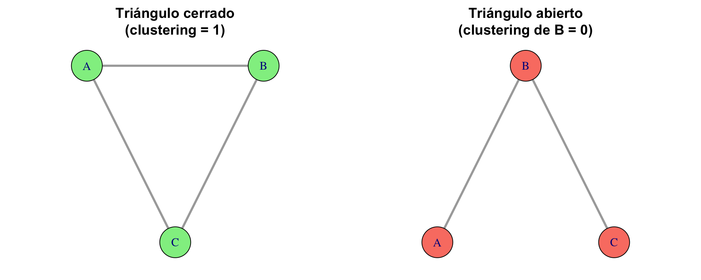
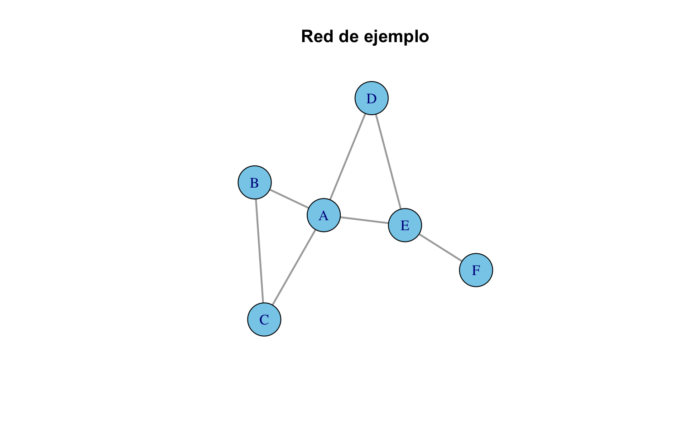
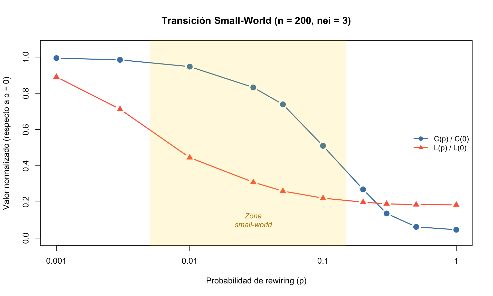
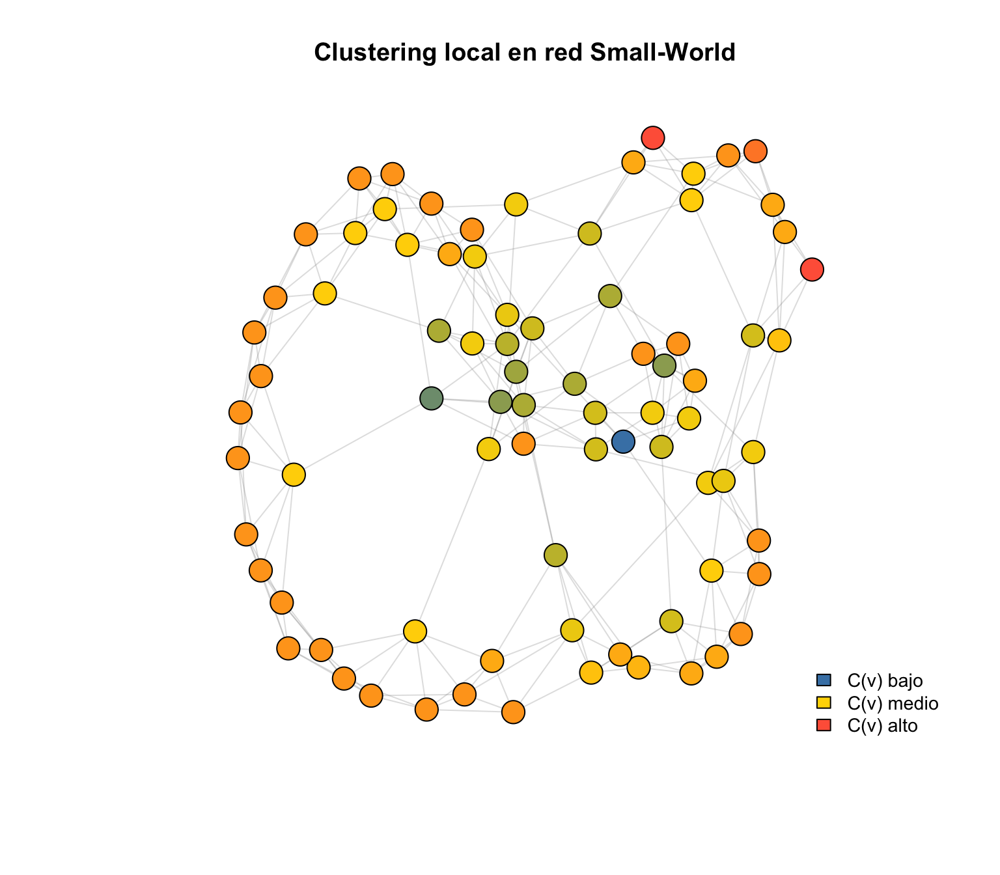
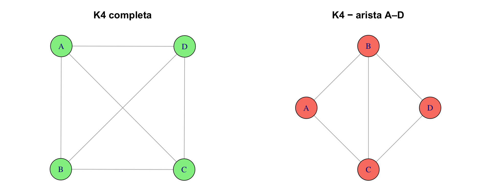
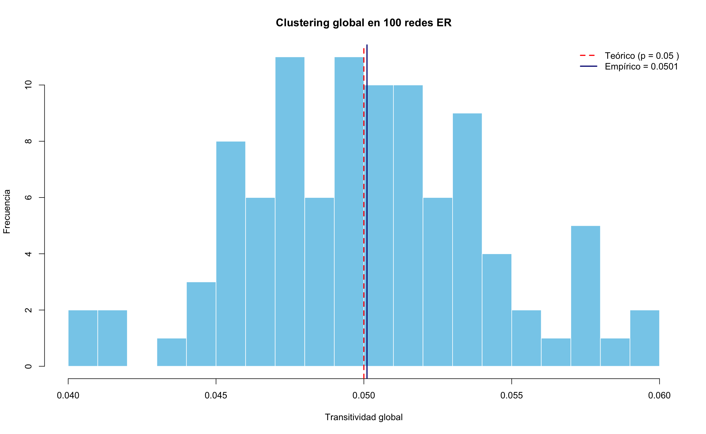

flowchart TD
A[Clustering] --> B[Triángulos]
A --> C[Coeficiente local]
A --> D[Coeficiente global]
A --> E[Comparar topologías]
B --> B1["¿Se cierran los triángulos?"]
C --> C1["C(v): por nodo"]
D --> D1[Transitividad de la red]
E --> E1[ER vs BA vs Small-world]
E --> E2[Relación grado–clustering]
Clustering y transitividad
🎯 Objetivos de aprendizaje
Al finalizar este capítulo serás capaz de:
- Definir el coeficiente de clustering local y global, y explicar su significado.
- Calcular la transitividad de una red usando
igraph. - Identificar triángulos en una red y su relación con el clustering.
- Comparar el clustering entre distintos modelos de red (ER, BA, small-world).
- Analizar la relación entre grado y clustering local en redes reales y simuladas.
Pregunta motivadora: Si tu amigo A conoce a tu amigo B, ¿es probable que A y B también se conozcan entre sí? En la vida real, sí. Este fenómeno — que los amigos de tus amigos tienden a ser tus amigos — es el corazón del clustering. Pero, ¿todas las redes se comportan así?
Preparación del entorno
library(igraph)
Attaching package: 'igraph'The following objects are masked from 'package:stats':
decompose, spectrumThe following object is masked from 'package:base':
union¿Qué es el clustering?
El coeficiente de clustering mide la tendencia de los vecinos de un nodo a estar conectados entre sí. Dicho de otra forma: si \(v\) tiene vecinos \(a\) y \(b\), ¿existe una arista entre \(a\) y \(b\)?
Cuando esa arista existe, se forma un triángulo (\(v\)–\(a\)–\(b\)), que es la unidad básica del clustering.
Ejemplo visual: triángulos
par(mfrow = c(1, 2), mar = c(1, 1, 3, 1))
# Triángulo cerrado
g_cerrado <- make_full_graph(3)
V(g_cerrado)$name <- c("A", "B", "C")
plot(g_cerrado,
vertex.color = "lightgreen", vertex.size = 35,
edge.width = 3,
main = "Triángulo cerrado\n(clustering = 1)")
# Triángulo abierto (le falta una arista)
g_abierto <- graph_from_literal(A -- B, B -- C)
plot(g_abierto,
vertex.color = "salmon", vertex.size = 35,
edge.width = 3,
main = "Triángulo abierto\n(clustering de B = 0)")
💡 Concepto clave
Un triángulo cerrado se forma cuando tres nodos están todos conectados entre sí. Un triángulo abierto (o tripleta) ocurre cuando un nodo conecta a otros dos que no están conectados entre sí. El clustering mide la proporción de triángulos abiertos que se “cierran”.
Coeficiente de clustering local
El clustering local de un nodo \(v\), denotado \(C(v)\), mide qué fracción de los pares de vecinos de \(v\) están realmente conectados:
\[ C(v) = \frac{\text{número de aristas entre vecinos de } v}{\binom{k_v}{2}} = \frac{2 \cdot |\{e_{ij} : i,j \in N(v)\}|}{k_v(k_v - 1)} \]
donde \(k_v\) es el grado de \(v\) y \(N(v)\) es el conjunto de vecinos de \(v\).
- \(C(v) = 1\): todos los vecinos de \(v\) están conectados entre sí (clique local).
- \(C(v) = 0\): ningún par de vecinos de \(v\) está conectado.
- Si \(k_v < 2\), el clustering no está definido (necesita al menos 2 vecinos para formar un par).
Veamos esto con un ejemplo concreto:
# Crear una red con estructura interesante
g_demo <- graph_from_literal(
A -- B, A -- C, A -- D, A -- E,
B -- C,
D -- E,
E -- F
)
plot(g_demo,
vertex.color = "skyblue", vertex.size = 30,
edge.width = 2,
main = "Red de ejemplo")
# Clustering local de cada nodo
cl_local <- transitivity(g_demo, type = "local")
knitr::kable(
data.frame(
Nodo = V(g_demo)$name,
Grado = degree(g_demo),
Clustering = round(cl_local, 3)
),
caption = "Clustering local de cada nodo"
)| Nodo | Grado | Clustering | |
|---|---|---|---|
| A | A | 4 | 0.333 |
| B | B | 2 | 1.000 |
| C | C | 2 | 1.000 |
| D | D | 2 | 1.000 |
| E | E | 3 | 0.333 |
| F | F | 1 | NaN |
El nodo A tiene 4 vecinos: B, C, D, E. Los pares posibles son \(\binom{4}{2} = 6\). De esos 6 pares, solo existen 2 aristas entre vecinos (B–C y D–E):
\[C(A) = \frac{2}{6} = 0.333\]
El nodo F tiene grado 1 (solo está conectado con E). Con un solo vecino no se puede formar ningún par, así que el clustering no está definido y igraph devuelve NaN.
El nodo B tiene 2 vecinos: A y C. El único par posible (A–C) sí existe. Por lo tanto:
\[C(B) = \frac{1}{1} = 1\]
Todos sus vecinos se conocen entre sí.
⚠️ Error frecuente
Los nodos con grado 0 o 1 devuelven NaN para el clustering local. Esto no es un error: simplemente no es posible medir clustering sin al menos 2 vecinos. Cuando calcules promedios, asegúrate de excluirlos con na.rm = TRUE.
Coeficiente de clustering global (transitividad)
Existen dos formas de medir el clustering a nivel de toda la red:
Transitividad global
Calcula la fracción de tripletas conectadas que forman triángulos:
\[ C_{\text{global}} = \frac{3 \times \text{número de triángulos}}{\text{número de tripletas conectadas}} \]
El factor 3 aparece porque cada triángulo contiene 3 tripletas.
Clustering promedio
Es simplemente el promedio del clustering local de todos los nodos (excluyendo los NaN):
\[ \langle C \rangle = \frac{1}{|\{v : k_v \geq 2\}|} \sum_{v: k_v \geq 2} C(v) \]
cat("Transitividad global:",
round(transitivity(g_demo, type = "global"), 4), "\n")Transitividad global: 0.5 cat("Clustering promedio:",
round(transitivity(g_demo, type = "average"), 4), "\n")Clustering promedio: 0.7333
💡 Concepto clave
La transitividad global pondera más los nodos con alto grado (porque generan más tripletas). El clustering promedio da el mismo peso a cada nodo. En redes heterogéneas (como las BA), pueden dar valores muy diferentes.
Triángulos en la red
igraph permite contar triángulos directamente:
# Número total de triángulos en la red
cat("Triángulos totales:", sum(count_triangles(g_demo)) / 3, "\n")Triángulos totales: 2 # Triángulos por nodo
knitr::kable(
data.frame(
Nodo = V(g_demo)$name,
Triángulos = count_triangles(g_demo)
),
caption = "Número de triángulos en los que participa cada nodo"
)| Nodo | Triángulos |
|---|---|
| A | 2 |
| B | 1 |
| C | 1 |
| D | 1 |
| E | 1 |
| F | 0 |
⚠️ Error frecuente
count_triangles() cuenta cuántos triángulos incluyen a cada nodo. Si sumas todos los valores y divides entre 3, obtienes el número total de triángulos (porque cada triángulo se cuenta 3 veces, una por cada vértice).
Clustering en distintos modelos de red
¿Cómo varía el clustering entre los diferentes modelos de red que ya conocemos? Esta comparación revela diferencias fundamentales.
set.seed(42)
redes <- list(
Anillo = make_ring(100),
Estrella = make_star(100, mode = "undirected"),
Completa = make_full_graph(50),
"Small-world" = sample_smallworld(1, 100, nei = 3, p = 0.05),
"Erdős–Rényi" = sample_gnp(100, p = 0.06),
"Barabási–Albert" = sample_pa(100, directed = FALSE)
)comparacion <- data.frame(
Red = names(redes),
Nodos = sapply(redes, vcount),
Aristas = sapply(redes, ecount),
Clustering_global = round(
sapply(redes, function(g) transitivity(g, type = "global")), 4),
Clustering_promedio = round(
sapply(redes, function(g) transitivity(g, type = "average")), 4),
Dist_media = round(sapply(redes, mean_distance), 3)
)
knitr::kable(comparacion,
caption = "Clustering y distancia media en seis topologías",
col.names = c("Red", "Nodos", "Aristas", "C global",
"C promedio", "Dist. media"))| Red | Nodos | Aristas | C global | C promedio | Dist. media | |
|---|---|---|---|---|---|---|
| Anillo | Anillo | 100 | 100 | 0.0000 | 0.0000 | 25.253 |
| Estrella | Estrella | 100 | 99 | 0.0000 | 0.0000 | 1.980 |
| Completa | Completa | 50 | 1225 | 1.0000 | 1.0000 | 1.000 |
| Small-world | Small-world | 100 | 300 | 0.4615 | 0.4720 | 3.909 |
| Erdős–Rényi | Erdős–Rényi | 100 | 278 | 0.0529 | 0.0598 | 2.825 |
| Barabási–Albert | Barabási–Albert | 100 | 99 | 0.0000 | 0.0000 | 5.934 |
# Excluir la red completa (distancia 1, clustering 1) para mejor escala
datos_plot <- comparacion[comparacion$Red != "Completa", ]
plot(datos_plot$Dist_media, datos_plot$Clustering_global,
pch = 19, cex = 2,
col = c("skyblue", "gold", "mediumpurple", "lightcoral", "tomato"),
xlab = "Distancia media", ylab = "Clustering global",
main = "Clustering vs. Distancia media",
xlim = c(0, max(datos_plot$Dist_media) * 1.1),
ylim = c(-0.02, max(datos_plot$Clustering_global) * 1.15))
text(datos_plot$Dist_media, datos_plot$Clustering_global,
labels = datos_plot$Red, pos = 3, cex = 0.8)
🔑 Recuerda
La red small-world ocupa una posición especial: tiene alto clustering (como una red regular) y baja distancia media (como una red aleatoria). Esta combinación es la firma del fenómeno small-world [@watts1998] y es característica de muchas redes reales: redes sociales, redes neuronales, redes de colaboración científica.
El fenómeno small-world: clustering + distancia corta
Exploremos cómo evoluciona el clustering y la distancia media al variar el parámetro de rewiring \(p\) en el modelo de Watts-Strogatz:
set.seed(42)
# Valores de p en escala logarítmica
p_vals <- c(0, 0.001, 0.003, 0.01, 0.03, 0.05, 0.1, 0.2, 0.3, 0.5, 1.0)
# Calcular métricas para cada p (promediar 5 realizaciones)
resultados <- data.frame(p = p_vals, clustering = NA, dist_media = NA)
for (i in seq_along(p_vals)) {
cls <- numeric(5)
dms <- numeric(5)
for (r in 1:5) {
g_sw <- sample_smallworld(1, 200, nei = 3, p = p_vals[i])
cls[r] <- transitivity(g_sw, type = "global")
dms[r] <- mean_distance(g_sw)
}
resultados$clustering[i] <- mean(cls)
resultados$dist_media[i] <- mean(dms)
}
# Normalizar para graficar en el mismo eje
cl_norm <- resultados$clustering / resultados$clustering[1]
dm_norm <- resultados$dist_media / resultados$dist_media[1]
# Graficar
plot(p_vals, cl_norm,
type = "b", pch = 19, col = "steelblue", lwd = 2, cex = 1.3,
log = "x",
xlab = "Probabilidad de rewiring (p)",
ylab = "Valor normalizado (respecto a p = 0)",
main = "Transición Small-World (n = 200, nei = 3)",
ylim = c(0, 1.05),
xaxt = "n")Warning in xy.coords(x, y, xlabel, ylabel, log): 1 x value <= 0 omitted from
logarithmic plot# Eje x personalizado
axis(1, at = c(0.001, 0.01, 0.1, 1),
labels = c("0.001", "0.01", "0.1", "1"))
lines(p_vals, dm_norm,
type = "b", pch = 17, col = "tomato", lwd = 2, cex = 1.3)
# Zona small-world
rect(0.005, -0.1, 0.15, 1.1,
col = adjustcolor("gold", alpha = 0.15), border = NA)
text(0.03, 0.1, "Zona\nsmall-world", cex = 0.9, font = 3, col = "darkgoldenrod")
legend("right",
legend = c("C(p) / C(0)", "L(p) / L(0)"),
col = c("steelblue", "tomato"),
pch = c(19, 17), lwd = 2,
bty = "n", cex = 0.9)
💡 Concepto clave
El gráfico muestra la esencia del fenómeno small-world: la distancia media cae rápidamente con unos pocos atajos (incluso \(p = 0.01\)), mientras que el clustering se mantiene alto durante un rango amplio de \(p\). La “zona small-world” es la región donde la red tiene ambas propiedades simultáneamente.
Relación entre grado y clustering local
En muchas redes reales, los nodos de alto grado (hubs) tienden a tener menor clustering local que los nodos de grado bajo. Esto ocurre porque es difícil mantener todos los vecinos conectados cuando tienes muchos.
set.seed(42)
redes_500 <- list(
"Erdős–Rényi" = sample_gnp(500, p = 0.02),
"Small-world" = sample_smallworld(1, 500, nei = 3, p = 0.05),
"Barabási–Albert" = sample_pa(500, directed = FALSE, m = 2)
)
colores <- c("skyblue", "mediumpurple", "tomato")
par(mfrow = c(1, 3), mar = c(4, 4, 3, 1))
for (i in seq_along(redes_500)) {
g <- redes_500[[i]]
deg <- degree(g)
cl <- transitivity(g, type = "local")
# Filtrar NaN
validos <- !is.nan(cl)
plot(deg[validos], cl[validos],
pch = 19, cex = 0.6,
col = adjustcolor(colores[i], alpha = 0.5),
xlab = "Grado", ylab = "Clustering local",
main = names(redes_500)[i])
# Línea de tendencia suavizada
if (sum(validos) > 10) {
lo <- lowess(deg[validos], cl[validos], f = 0.5)
lines(lo, col = "black", lwd = 2)
}
}
⚠️ Error frecuente
No interpretes la dispersión en estos gráficos como “ruido”. Es inherente a las redes: para un mismo grado, diferentes nodos pueden tener configuraciones locales muy distintas. La tendencia (línea negra) es lo informativo, no los puntos individuales.
Visualización por clustering
Una forma efectiva de explorar el clustering es colorear los nodos según su coeficiente local:
set.seed(42)
g_vis <- sample_smallworld(1, 80, nei = 3, p = 0.05)
cl_vis <- transitivity(g_vis, type = "local")
cl_vis[is.nan(cl_vis)] <- 0 # Reemplazar NaN por 0 para la visualización
# Crear paleta de colores: azul (bajo) → rojo (alto)
paleta <- colorRampPalette(c("steelblue", "gold", "tomato"))(100)
colores_nodos <- paleta[cut(cl_vis, breaks = 100, labels = FALSE)]
plot(g_vis,
vertex.color = colores_nodos,
vertex.size = 8,
vertex.label = NA,
edge.color = adjustcolor("gray60", alpha = 0.3),
main = "Clustering local en red Small-World")
# Leyenda manual
legend("bottomright",
legend = c("C(v) bajo", "C(v) medio", "C(v) alto"),
fill = c("steelblue", "gold", "tomato"),
bty = "n", cex = 0.9)
Ejercicios
Ejercicios resueltos
Ejercicio resuelto 1: Crea una red de 4 nodos completamente conectada (clique). Calcula el clustering local de cada nodo, el clustering global y cuenta los triángulos. Luego elimina una arista y observa cómo cambian las métricas.
📝 Solución
Paso 1: Red completa de 4 nodos.
g4 <- make_full_graph(4)
V(g4)$name <- c("A", "B", "C", "D")
cat("=== Red completa (K4) ===\n")=== Red completa (K4) ===cat("Clustering local:", transitivity(g4, type = "local"), "\n")Clustering local: 1 1 1 1 cat("Clustering global:", transitivity(g4, type = "global"), "\n")Clustering global: 1 cat("Triángulos totales:", sum(count_triangles(g4)) / 3, "\n")Triángulos totales: 4 Paso 2: Eliminar una arista y recalcular.
# Eliminar la arista A–D
g4_mod <- delete_edges(g4, E(g4, P = c("A", "D")))
cat("\n=== Tras eliminar A–D ===\n")
=== Tras eliminar A–D ===cl_mod <- transitivity(g4_mod, type = "local")
nombres <- V(g4_mod)$name
for (i in seq_along(nombres)) {
cat("C(", nombres[i], ") =", round(cl_mod[i], 3), "\n")
}C( A ) = 1
C( B ) = 0.667
C( C ) = 0.667
C( D ) = 1 cat("Clustering global:", round(transitivity(g4_mod, type = "global"), 4), "\n")Clustering global: 0.75 cat("Triángulos totales:", sum(count_triangles(g4_mod)) / 3, "\n")Triángulos totales: 2 par(mfrow = c(1, 2), mar = c(1, 1, 3, 1))
plot(g4, vertex.color = "lightgreen", vertex.size = 35, main = "K4 completa")
plot(g4_mod, vertex.color = "salmon", vertex.size = 35, main = "K4 − arista A–D")
Interpretación: En la \(K_4\) completa, cada nodo tiene clustering 1 (todos los vecinos conectados) y hay 4 triángulos. Al eliminar una arista (A–D), los nodos A y D bajan su clustering porque pierden un triángulo, mientras que B y C mantienen clustering 1 porque sus vecinos siguen todos conectados entre sí. El clustering global baja de 1.0 a 0.8.
Ejercicio resuelto 2: Simula 100 redes aleatorias ER de 200 nodos con \(p = 0.05\). Para cada una, calcula la transitividad global. Grafica la distribución de los 100 valores y compara con el valor teórico (\(p\) misma, ya que en redes ER \(C \approx p\)).
📝 Solución
Paso 1: Simular y recolectar valores de clustering.
set.seed(42)
n_sims <- 100
n_nodos <- 200
p <- 0.05
clustering_sims <- numeric(n_sims)
for (i in 1:n_sims) {
g_sim <- sample_gnp(n_nodos, p)
clustering_sims[i] <- transitivity(g_sim, type = "global")
}
cat("Clustering teórico (≈ p):", p, "\n")Clustering teórico (≈ p): 0.05 cat("Clustering medio empírico:", round(mean(clustering_sims), 4), "\n")Clustering medio empírico: 0.0501 cat("Desviación estándar:", round(sd(clustering_sims), 4), "\n")Desviación estándar: 0.0041 Paso 2: Visualizar la distribución.
hist(clustering_sims,
col = "skyblue", border = "white",
main = "Clustering global en 100 redes ER",
xlab = "Transitividad global",
ylab = "Frecuencia",
breaks = 15)
abline(v = p, col = "red", lwd = 2, lty = 2)
abline(v = mean(clustering_sims), col = "navy", lwd = 2)
legend("topright",
legend = c(paste("Teórico (p =", p, ")"),
paste("Empírico =", round(mean(clustering_sims), 4))),
col = c("red", "navy"), lwd = 2, lty = c(2, 1),
bty = "n")
Interpretación: En redes Erdős–Rényi, la transitividad global converge a \(p\) cuando \(n\) es grande. Con 200 nodos y \(p = 0.05\), el clustering medio empírico está muy cerca de 0.05, confirmando la predicción teórica. La varianza es baja, lo que indica que el clustering es una propiedad estable en este modelo.
Ejercicios con pistas
Ejercicio 1: Compara el clustering entre una red aleatoria ER y una red small-world de 200 nodos cada una. Ambas deben tener un número similar de aristas. ¿Cuál tiene mayor clustering? ¿Por qué?
💡 Pista 1
Primero genera la red small-world: sample_smallworld(1, 200, nei = 3, p = 0.05). Luego cuenta sus aristas con ecount() y genera una red ER con \(p\) tal que tenga un número similar: \(p \approx \frac{2m}{n(n-1)}\).
💡 Pista 2
La red small-world debería tener un clustering mucho mayor porque las conexiones locales del modelo lattice original forman muchos triángulos. La red ER del mismo tamaño tiene clustering \(\approx p\), que es muy bajo.
💡 Pista 3 — Pseudocódigo
1. set.seed(42)
2. g_sw <- sample_smallworld(1, 200, nei = 3, p = 0.05)
3. m <- ecount(g_sw)
4. p_er <- 2 * m / (200 * 199)
5. g_er <- sample_gnp(200, p_er)
6. cat("Aristas SW:", ecount(g_sw), "ER:", ecount(g_er))
7. cat("Clustering SW:", transitivity(g_sw, type = "global"))
8. cat("Clustering ER:", transitivity(g_er, type = "global"))Ejercicio 2: ¿Qué nodos tienen clustering local 0 en una red BA de 100 nodos? ¿Qué los caracteriza (en términos de grado o posición)?
💡 Pista 1
Calcula transitivity(g, type = "local") y filtra con which(cl == 0). Luego revisa el grado de esos nodos.
💡 Pista 2
En una red BA con \(m = 1\) (por defecto), muchos nodos tienen grado 1. Con un solo vecino no se pueden formar triángulos, así que su clustering es NaN. Los nodos con clustering exactamente 0 tienen grado \(\geq 2\) pero ninguno de sus vecinos se conoce entre sí.
💡 Pista 3 — Pseudocódigo
1. set.seed(42)
2. g_ba <- sample_pa(100, directed = FALSE)
3. cl <- transitivity(g_ba, type = "local")
4. deg <- degree(g_ba)
5. # Nodos con clustering 0 (no NaN)
6. idx_cero <- which(cl == 0 & !is.nan(cl))
7. cat("Nodos con C = 0:", idx_cero)
8. cat("Sus grados:", deg[idx_cero])
9. # Comparar con nodos NaN
10. cat("Nodos NaN (grado < 2):", which(is.nan(cl)))Ejercicio 3: Agrega aristas progresivamente a una red tipo anillo de 50 nodos para crear triángulos. En cada paso, agrega una arista entre nodos a distancia 2 (vecinos de vecinos). Registra cómo cambia el clustering global con cada arista añadida. Grafica la evolución.
💡 Pista 1
En un anillo, los nodos a distancia 2 son: nodo \(i\) y nodo \(i+2\) (módulo \(n\)). Agregar esa arista cierra un triángulo con el nodo \(i+1\).
💡 Pista 2
Usa un bucle: en cada iteración agrega add_edges(g, c(i, (i+2) %% n + 1)) y calcula transitivity(g, type = "global"). Guarda los resultados en un vector.
💡 Pista 3 — Pseudocódigo
1. g <- make_ring(50)
2. cl_evol <- transitivity(g, type = "global") # inicial = 0
3. for (i in 1:25) {
4. # Agregar arista entre nodo i y nodo i+2
5. v1 <- i
6. v2 <- ((i + 1) %% 50) + 1
7. g <- add_edges(g, c(v1, v2))
8. cl_evol <- c(cl_evol, transitivity(g, type = "global"))
9. }
10. plot(0:25, cl_evol, type = "b",
11. xlab = "Aristas agregadas", ylab = "Clustering global")Ejercicios propuestos
Ejercicio propuesto 1 ⭐
Crea una red con tres triángulos conectados en cadena (triángulo A–B–C, triángulo C–D–E, triángulo E–F–G). Calcula el clustering local de cada nodo. ¿Los nodos “puente” (C y E) tienen clustering diferente al resto?
Autoevaluación: Los nodos puente C y E deberían tener clustering menor que los nodos terminales (A, B, F, G) porque tienen más vecinos pero no todos sus vecinos están conectados entre sí.
Ejercicio propuesto 2 ⭐⭐
Crea una función proporcion_alto_clustering() que reciba un grafo y un umbral, y devuelva la fracción de nodos cuyo clustering local es mayor que el umbral. Pruébala con una red small-world de 300 nodos y umbral 0.5.
Autoevaluación: En una red small-world con \(p = 0.05\), la mayoría de los nodos debería tener clustering alto. Espera que más del 50% supere el umbral de 0.5.
Ejercicio propuesto 3 ⭐⭐
Reproduce el gráfico de transición small-world (clustering y distancia media vs. \(p\)) pero con una red de 500 nodos y nei = 5. ¿Cambia la forma de las curvas? ¿Se desplaza la “zona small-world”?
Autoevaluación: Las curvas deberían tener la misma forma general. Con más vecinos (
nei = 5), el clustering inicial es más alto y la distancia media inicial más baja, pero la transición ocurre en un rango de \(p\) similar.
Ejercicio propuesto 4 ⭐⭐⭐
Investiga la relación grado–clustering en una red BA de 1000 nodos con \(m = 3\). Calcula el clustering local promedio para cada valor de grado (agrupa nodos por grado y promedia sus clustering). Grafica \(\langle C(k) \rangle\) vs. \(k\) en escala log-log. ¿Ves una relación tipo power-law?
Autoevaluación: Deberías observar una tendencia decreciente: a mayor grado, menor clustering. En redes BA teóricas, \(C(k) \sim k^{-1}\), por lo que en log-log debería verse una recta con pendiente \(\approx -1\).
Ejercicio propuesto 5 ⭐⭐⭐
Elige dos redes de la comparación (por ejemplo, small-world y BA). Elimina 10 nodos aleatorios de cada una y observa cómo cambia el clustering global. ¿Cuál es más robusta? Este ejercicio conecta con el ?@sec-robustez.
Autoevaluación: La small-world debería mantener un clustering alto tras la eliminación porque sus triángulos están distribuidos uniformemente. En la BA, eliminar un hub puede destruir muchos triángulos de golpe.
Resumen del capítulo
flowchart LR
A[Triángulos] --> B[Clustering local C_v]
B --> C[Clustering global]
C --> D[Comparar topologías]
D --> E[Transición small-world]
E --> F[Relación grado–clustering]
F --> G["Siguiente: Robustez →"]
style G fill:#e8f4f8,stroke:#3ABEF9
| Función / Concepto | Descripción |
|---|---|
transitivity(g, type = "local") |
Clustering local de cada nodo |
transitivity(g, type = "global") |
Transitividad global (fracción de triángulos) |
transitivity(g, type = "average") |
Promedio del clustering local |
count_triangles(g) |
Número de triángulos por nodo |
sample_smallworld() |
Genera red Watts-Strogatz |
| Fenómeno small-world | Alto clustering + baja distancia media |
| \(C(v) = 0\) | Ningún par de vecinos de \(v\) está conectado |
| \(C(v) = 1\) | Todos los vecinos de \(v\) están conectados (clique local) |
Conexión con el siguiente capítulo: El clustering y la distancia media describen la estructura “normal” de una red. Pero, ¿qué pasa cuando las cosas van mal? En el ?@sec-robustez estudiaremos qué ocurre cuando eliminamos nodos de la red — ya sea aleatoriamente (fallos) o atacando los más conectados (hubs). Verás cómo la estructura que hemos aprendido a medir determina la resistencia o fragilidad de una red.
Autoevaluación
Pregunta 1
¿Qué mide el coeficiente de clustering local \(C(v)\)?
- La distancia media de \(v\) al resto
- El número de vecinos de \(v\)
- La fracción de pares de vecinos de \(v\) que están conectados entre sí ✅
- El grado de \(v\) normalizado
\(C(v)\) mide “qué tanto se conocen entre sí los amigos de \(v\)”.
Pregunta 2
Verdadero o Falso: En una red Erdős–Rényi, el clustering global es aproximadamente igual a la probabilidad \(p\).
✅ Verdadero. En una red ER, cada arista existe con probabilidad \(p\) de forma independiente, por lo que la probabilidad de que dos vecinos de un nodo estén conectados también es \(p\).
Pregunta 3
¿Por qué un nodo con grado 1 tiene clustering NaN?
Porque con un solo vecino no se puede formar ningún par de vecinos. El denominador de la fórmula \(C(v) = \frac{2e_v}{k_v(k_v - 1)}\) es cero cuando \(k_v = 1\).
Pregunta 4
¿Qué caracteriza a una red small-world?
- Distancia media alta y clustering alto
- Distancia media baja y clustering bajo
- Distancia media baja y clustering alto ✅
- Distancia media alta y clustering bajo
La combinación de distancias cortas (como en redes aleatorias) y clustering alto (como en redes regulares) es la firma del fenómeno small-world.
Pregunta 5
Verdadero o Falso: En una red Barabási–Albert, los hubs suelen tener el clustering local más alto.
❌ Falso. Los hubs suelen tener clustering bajo porque, aunque tienen muchos vecinos, es poco probable que todos esos vecinos estén conectados entre sí. El clustering tiende a decrecer con el grado.